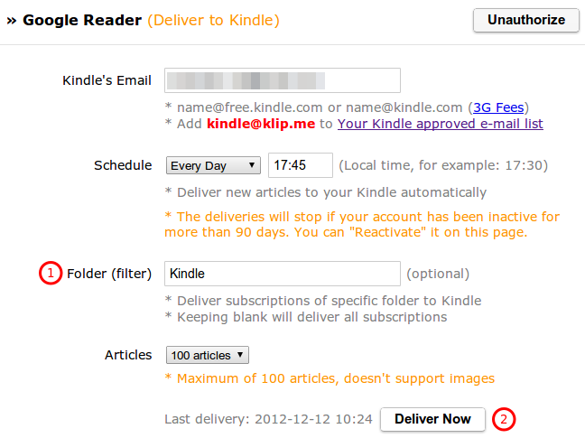
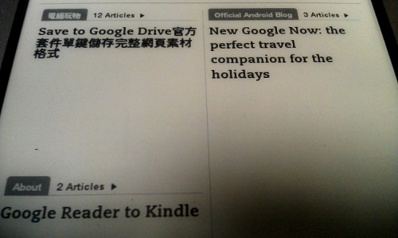

這個服務可以定期將 Google Reader 上未閱讀的文章，依 subscriptions 區分成不同的章節，打包成期刊（periodical）的格式，透過 Kindle’s Email 推送到 Kindle 裝置。

-
Folder (filter) - 只打包 Google Reader 上特定 folder 下 subscriptions 未閱讀的文章。
-
Deliver Now 的功能很實用，可以很快地體驗 Klip.me 產出的期刊在 Kindle 上看起來是什麼樣子，或是確認設定有沒有問題。
|
|
由於 Klip.me 目前限定一次最多只打包 100 篇文章，再加上許多 feed 的內容是沒有營養的（簡單幾個字，再附上一個吊人胃口的連結），推送到 Kindle 上也沒什麼用。建議在 Google Reader 上建立一個 Kindle 專用的 folder，把 "真正適合在 Kindle 上閱讀" 的 subscriptions 加到它底下，再將 folder 的名稱填入上圖 "Folder (filter)" 的位置，這樣定期收到的期刊就會很 "紮實"。 |

"偶爾" 會遇到 Dictionary Not Found 的問題，不知道是不是因為
參考資料
其他文件
-
8種方法將摘要輸出的RSS源轉變為全文輸出 « 博士牌民工 (2012-08-23) - 原來 feed 沒有輸出全文是為了保證自身的流量，不過還是可以透過其他服務將 feed 轉成全文輸出。
-
allow to set the language of the text – Customer Feedback for Klip.me (2011-06-29) - 電子書的語言不是 English，導致英漢字典起不了作用的問題。